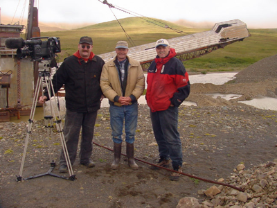

Visualizing a Homeland: Documentation strategies and Native American cultural heritage
In the American Archives and Manuscripts class (IS 431), I was introduced to a dinosaur of an appraisal theory, documentation strategy. Largely eschewed by the traditional archival community and dismissed as “a great but impractical idea,” I saw potential for it in the moving image archives community.
This paper argues for the importance of documentation strategy for the collection and maintenance of accurate audiovisual cultural records for Native American communities. Using the case study of the Voices and Images of Alaska (VIA) project, it argues for a reevaluation of the purpose and facility of the method for the preservation of the audiovisual cultural heritage of underrepresented native communities. After discussing the importance of diverse visual cultural materials for a cross-section of users, it assesses the VIA project’s outreach and collection methodology and constructs a holistic evaluation of the project’s merits as well as its weaknesses. The paper’s conclusion makes a “guide to best practices” recommendation for similar future projects that includes well-defined goals, a structured and region-specific collection approach, outreach and education elements and project maintenance strategies.
The excerpts below represent the core of my argument.
**NOTE** This paper received the honorable mention for the Information Studies department’s Diversity Paper Award, and is currently being prepared for publication.

Two years ago I worked on a documentary called entitled Homeland: Four Portraits of Native Action, which profiled four contemporary Native American activists from four different tribes and their struggles for sovereignty and environmental justice. The film traced the tribes’ current problems from their historical roots in order to place their modern struggle in a broader historical framework. One of my duties was to locate and license archival film and stock footage, to inform the voiceover narrative and give the viewer a visual sense of each tribe’s cultural character and legacy. In my research, I noticed that all or most of the representation I was able to find was “outsider” material shot by major news organizations, non-native documentary filmmakers and sometimes government organizations. This was particularly the case with the Alaskan segment of the film, which detailed an Athapascan Gwich’in tribe’s struggle with the building of an oil pipeline in the middle of caribou calving grounds of the Alaskan National Wildlife Refuge.
In attempting to preface their struggle with some visual history to elucidate their long-term relationship with the caribou, the only “insider” footage we had been able to acquire was some 16mm film from the National Archives. The clips showed Native girls playing on a wooden teeter totter, drying caribou meat and some shots of Native women holding their babies. In the final days of the editing process, one of our advisors from the Gwich’in tribe examined at the footage and determined that it actually depicted Inuit Natives. I embarked on a mad search to find replacement footage, calling every archive, museum and library I could find in Alaska to see what viewing copies we could obtain. The reason this approach is problematic is because repositories like museums and libraries are not often set up to license this type of footage because it is not within their mandate to do so. Also, master-quality footage needs to be available for the final transfer of the film, and most of the time these types of organizations only carried poor-quality VHS viewing copies.
Eventually I was able to procure a VHS viewing copy a 1973 film entitled Legends of the Tanana, which depicts the traditional passing of legends from one generation to the next by two Athapascan chiefs. Not only did I have to go to great lengths to track down the copyright holders of this film - white filmmakers who were commissioned by the tribes to make the piece - but the only way to obtain broadcast-quality master footage was by paying for an expensive transfer of an older film element that the filmmaker had to literally dig out of his garage. Ironically, the lengths we took to locate, license and transfer this footage allowed for this tiny visual piece of native heritage to be preserved when it otherwise would have continued to decay in a dusty, humid garage in Seattle.
The above situation points to the following problems:
-
๏Native American visual history is scattered and incomplete,
-
๏The most immediately accessible and frequently accessed fragments of this history are covered mostly by news organizations, documentary filmmakers and other outsiders, ensuring that any study of the region that incorporates audiovisual materials will be biased,
-
๏There is no central search mechanism for finding these resources,
-
๏This is particularly the case in remote areas like Alaska, where complete cultural records are arguably more important due to their minimal presence in the world’s cultural memory.
Looking at these elements as a whole, it becomes apparent that an inter-institutional collective effort would have to take place in order to enact a solution. Documentation strategy is an appraisal methodology which meets these needs; although its usefulness and applicability has been questioned by traditional archivists since it was introduced in the mid-1980’s. This methodology, however criticized and impractical in other archival environments, has the potential of a renewed sense of purpose in situations like the one outlined above. Documentation strategy is the best way to ensure that there is a well-rounded, accessible selection of moving image cultural heritage records for native communities. This is more broadly true for all such communities, but is especially the case in expansive rural areas like Alaska, where they are disparate and spread out across the region.
Pragmatic theorization: paring down the scope of documentation strategy
(here I lay out the basic tenets of the documentation strategy appraisal theory, and summarize its criticisms)
Archival adoptions: moving image holdings as cultural memory
(in this section, I provide an overview of the orphan film movement, and talk about how it is changing the nature of appraisal for moving image collections away from film as art and towards film as cultural memory)
The state of the state of Alaska’s moving images
At the 2006 conference of the Association of Moving Image Archivists, Mike Martz, Senior Producer at the public access TV station KYUK in Bethel, Alaska, spoke about KYUK’s moving image holdings at a panel entitled “Regional Audio-Visual Archives Case Studies.” He spoke about preservation efforts and showed clips from their video archive, which includes 20 years of daily news broadcasts in both Yup’ik and English, locally produced pieces involving the Yup’ik community, and documentaries produced by Martz himself. Martz showed a clip from the “Waves of Wisdom” series, which depicts Yup’ik elders describing their tribe’s values and cultures, and a rapidly decaying 1970’s video clip of some local Yup’ik children performing a traditional dance at their school. Martz’s wife, a local schoolteacher in Bethel, frequently uses video from the KYUK collection in her classroom. She showed this dance clip to her students one day and they recognized some of their parents – however neither the children nor their parents could perform the dance any longer. The video element was so badly decayed that the clip was barely watchable, the ephemeral nature of a disappearing local tradition painfully obvious in the pixilated image.
In an interview, Martz extrapolated a bit on the immediacy of their preservation problem, which involves large quantities of 15-20+ year old video on the highly unstable ¾” format;
-
If I don’t continue to get the original material, particularly the ¾” material, converted to a more stable format, in about five years at least half of it will be unplayable. That might be a worst-case scenario, but I keep running across reels that don’t play for one reason or another, mostly because of binder hydrolysis. Then there’s the digital question – when can we make the jump to storing these digitally, and whether we can afford to do this here at all or does what we have need to live somewhere else. [1]
Martz has worked out a deal with the Alaskan Film Archives for some preservation and storage outsourcing – because of the uncontrolled climate conditions in the KYUK building it is acceptable for him to hold only VHS or DVD access copies and let the originals live there. Although he does what he can with the limited resources available to him, the urgency of the situation cannot be ignored. Collections like the one at KYUK are among the more visible in the state just because of the efforts of one person (Martz), who is not even a trained archivist but comes from a production background. There are countless situations such as this where there is no Mike Martz to ensure adequate archival procedures are implemented in the care of moving image collections.
Another somewhat urgent preservation case is the Chuck Imig video collection, which is comprised of over 5,000 reel-to-reel and video tapes shot over a 16-year period that documents the proceedings of the Alaskan Native Claims Settlement Act (ANSCA), one of the most important events in Alaska’s political history. This includes court proceedings, tribal land meetings, and interviews with participants on both sides of the issue. The footage is in the style of C-Span, unedited, sans commentary and blisteringly thorough in its coverage. Former state senator Arliss Sturgulewski spoke to the importance of the collection as a cultural record, "We don't know much about our short history and that's wrong. I think that these videos that Imig took can be a great help in understanding where we've been, so we know where we are as we move ahead in solving other big issues." [2] Imig feels the people at the meetings responded to the camera, as he states in this news story, “Videotape was a new technology at the time, and Imig thinks the camera became a player in the many ANSCA and ANILCA talks. Everyone was very aware of the camera, he said, ‘and it brought out the truth in people.’” [3] The “official” ANSCA proceedings are documented in the public record, but the inherent tensions, character nuances and tone of the debates cannot be expressed in government court documents or press coverage. Coverage of the tribal land meetings is also unique, as access was granted to Imig due to the fact that he was commissioned by Don Wright, former president of the former Alaska Federation of Natives. This insider-granted footage has the potential to enforce the notion that these communities have at times straddled their oppression, as Richard Jennings describes; “Alaska Natives have, both prior to colonization and through linkages to the larger society, shaped and reshaped their won social structures with unusual savvy.” [4] The Imig collection is almost at critical mass in that it is reaching that stage of a video collection’s life where preservation is absolutely crucial. This is a delicate, complicated and expensive process that will require collaboration between Imig and a sponsoring archive. Whether that will happen may well depend on a mechanized strategy that encourages this kind of cooperation, as well as gives the collections in its scope the visibility required to seek further preservation funding.
The particular nature of Alaska in terms of its countryside and cultural complexities make it a difficult subject for study and interpretation. Some of the forces that play into these complexities are 1) Alaska’s geographically vast landscape, 2) its relatively new statehood and prior history of colonization and imperialism, 3) the diversity of its Native peoples and 4) the inherent tension between the cultural priorities of Natives and the outsiders that seek to study them. Michael Jennings has written about the difficulties of researching Alaskan Native cultures; “Strange bedfellows, hidden motivations, strategic interventions, and unintended consequences intersect with larger philosophical and cultural currents in the success or failure of any given [research] initiative. Understanding this multifaceted and interdisciplinary situation is no simple proposition for a researcher.” [5] Western concepts of ownership also fall victim to these kinds of communication lapses; Martz spoke about some Native Alaskan’s self-proclaimed “traditional imperative” that they invoke when refusing to sign a release. Many of KYUK’s holdings that depict Native subjects are not licensable to outside sources, which Martz sees as problematic for access. There is no clear cut solution to these clashing imperatives. But a documentation strategy that encourages discussion and cooperation between Native and non-native institutions could potentially approach a level of understanding in terms of complex notions such as copyright and intellectual property.
The above examples each point to a different reason that a documentation strategy could be effective in the identification and collocation of disparate sets of moving image archive holdings. There is a case study that warrants examination in terms of the real-world applicability of such an undertaking. In 2001, the Alaska Moving Image Preservation Association (AMIPA) received a grant from the Save America’s Treasures program, a public-private partnership fund dispersed by the National Park Service and the National Trust for Historic Preservation, for a project entitled Voices and Images of Alaska (VIA). Although the project was intuitively “demand-driven”, it nonetheless follows the pattern of a well-implemented, effective and largely successful example of a documentation strategy. The project was designed as a “long-term strategy to identify and protect Alaska's culturally and historically valuable film, video and audio collections.” [6] Although the scope of the project extends beyond cultural and native material – AMIPA’s mandate states that it aims to save all Alaskan moving images – Alaska’s largely regional nature and the predominance of seven major Native Alaskan groups ensure that the VIA project encapsulates these materials.
The Voices and Images of Alaska project: approaching the right idea
The VIA project follows all of Samuels’ initial guidelines for documentation strategy:
(1) Topic selection and definition: AMIPA defined the topic as Alaskan moving image material.
(2) Site establishment and advisory board formation: AMIPA was designated as the site, an archivist was assigned to direct the project and the advisory board was formed out of a selection of ten representatives from local archives and libraries, schools and universities, and historical associations.
(3) Assessment of available documentation and plan implementation: the first phase of the project was an inventory and assessment plan, which included a survey of the more “well-known” collections from archives, news organizations, libraries and museums around the state. The second phase of the project involved outreach to fill in the gaps where there was missing representation of specific cultures, types of footage (i.e. amateur and home movie vs. scenic stock footage vs. news and documentary footage, etc) and areas of Alaskan culture and economy.
(4) Organization and placement of the information: the final phase of the project is the publication, in print and electronically, of an inventory document with copyright, format and cataloguing data for the entirety of the project’s findings. The catalog will also be integrated with the Library of Congress’s Moving Image Collections (MIC) database, which ensures broad dissemination of its findings to a broad cross-section of researchers as well as the moving image archive community.
The project goals state that its mission is twofold: first to address the preservation needs of the holdings as a whole, and second to provide a complete record of Alaska’s visual history for research use. In order to effect these goals, the VIA project has harnessed their tradition of outreach to facilitate the location of collections and to promote their proper care and maintenance by educating collection holders. According to archivist and project director Kevin Tripp, “We do a certain level of outreach anyway … partly through fundraising activities and partly because it serves the community better … VIA is a more formalized mechanism, that helped grow our organization statewide.” [7] The project funded two conferences in 2002 and 2005, each with a different focus and set of topics, panels and speakers. The 2002 conference, entitled “Sharing the Knowledge, Sharing the Tools”, stressed the fundamentals of media preservation, storage and climate concerns, and basic cataloguing training. Jim Hubbard and Mona Jimenez from Independent Media Arts Preservation (IMAP) provided training in FileMaker Pro with a specific VIA template, with the goal of making cataloguing simple for some of the untrained non-archivists and facilitating information sharing between repositories.
The 2005 conference, “Voices and Images of Alaska 2005”, developed out of a response from attendees of the first conference. According to Tripp, “we had asked people in the 2002 conference what they wanted to see from us next time. The two concepts that were highlighted were copyright issues and complicated ownership issues that surround Alaska Native cultural material.” AMIPA brought in John McKay, a local copyright lawyer with a special interest in moving archives, and Dr. Rosita Worl, an Alaskan Tlingit woman who holds a PhD in Anthropology: “It was an excellent interchange – they both spoke independently and then it turned into a dialogue between the two, about how western copyright concepts fell apart relative to these more traditional concepts of ownership and how to try and make these connections work.” These two conferences supplemented the entire project’s goals by creating a collective sense of purpose between all participants. In the sense that educational aspect is a crucial part of their strategy, VIA extends beyond the traditional definition of documentation strategy, arguably in a way that enriches and improves it to promote better relationships and communication between participating institutions.
Another unique way that VIA approached its strategy was in its incorporation of screenings and fundraising events throughout the process to bolster collection efforts during the “filling in the gaps” phase of the project. Once again capitalizing on its honed outreach practices, Tripp would organize targeted screenings and involve the media when a particularly valuable piece of footage or collection came in, “Periodically we’d get a hold of something interesting and pass it along to the media so we could get some visibility and that would in turn bring more to our door. … public screening events, or fundraising events – often times they are the same thing – served to bring collections to us.” One such screening involved a home movie collection by a Native Alaskan man from the remote village of Barrow that depicted traditional seasonal hunting and gathering, “To the outside world it’s incredibly exotic because they are hunting walrus, whale and caribou. But the feel of it is totally different than a lot of documentary footage because it’s just these guys out hunting with their friends.” Due to the fact that it was a rarity for men from this region to have a camera in the 1960’s, the acquisition of this piece of footage was a small but important example of the success of documentation strategy to complete the visual cultural record in this particular case.
Perhaps the most notorious single piece of footage that came in and was selected for exhibition was another amateur 16mm film reel that was donated from a man in California who had bought the film at a garage sale. Upon noticing that a few of the cans were labeled “Alaska”, he contacted AMIPA and shipped them the reels on his own dime. Tripp described the mounting excitement from he and the other AMIPA staff when they realized the film dated back to the 1930’s. Based on this alone -- pre-war footage constituted a major gap in the VIA collection -- he organized a screening, but then realized upon a projection inspection that there was more to the footage than they had originally assessed, “it had this nice sequence that with a little bit of detective work we determined was Will Rogers and Wiley Post in Anchorage in 1935, the day before their fatal plane crash. And it’s probably the last motion picture footage that was shot of either one of them.” This piece of footage is an example of how AMIPA’s ongoing outreach strategies further enriched the VIA’s collection development. According to Tripp, “although it was short, it was such a historic piece of film. This was such an important story nationwide, but it particularly resonated here in Alaska because it happened here. This piece of footage got us a LOT of media visibility and led to a lot of telephone calls and a lot of interesting film came our way after that, amateur collections.”
The inclusion of amateur collections speaks to one of the central purposes of documentation strategy – to ensure that the cultural record is not biased in favor of dominant power structures and represents all members of a given region. Sam Kula, former president of the Association of Moving Image Archivists and author of the only book on moving image appraisal methods, included a brief chapter devoted to the applicability of traditional appraisal methods to film archives. His one mention of documentation strategy, however brief, speaks to this very issue,
-
The effort to develop a bottom-up approach has given rise to the concept of documentation strategy … what this approach signals to moving image archivists is the need to move outside the boundaries of the moving images industries to reach out to amateur and independent image-makers, all types of artists working in film and video and image-making on the margins of society, to ensure that their collections are truly reflective of the entire society. [8]
In this way, the medium specificity of the VIA project promotes the applicability of documentation strategies to a particular kind of moving image project – one that assesses a regional culture where traditions are largely oral, communities are distant from one another and the presence of moving image material is scarce.
… (problems encountered, preservation issues with certain types of collections, current status of the project) …
Conclusion
Perhaps the spirit of cooperation inherent in the VIA project speaks to its roots in Alaska, with its closer proximity to Canada than the rest of the United States. In his book Documenting Localities, Richard Cox argues that American archivists have trouble approaching purposeful collaboration, but that Canadian archivists’ concept of “total archives” promotes it. He quotes a Canadian archival group report, which defines total archives as those that “actively acquire both the unofficial records and an extensive range of private materials in all documentary media bearing on the life of their institution or region.” [9] This certainly seems to be in line with the mission and purpose of the VIA project, which appears rooted in a sense of cooperation and local imperative that other archives could stand to learn from. Cox lays out a set of guidelines for the proper implementation of documentation strategies for localities, that while somewhat streamlined still appear exasperatingly broad in scope. It may be better to propose documentation strategy to archivists with baby steps, and limiting the scope of the elements to be documented by record type might be the best way to do this.
Beyond limiting by record type, the importance of a structured approach to documentation cannot be over-stressed, nor can the importance of follow-through to ensure that the strategy’s results are made accessible and updated over time. This access should include localized publication in both print and electronic form to ensure that communities without web or computer access can view them, and should also be extended to larger databases like MIC to provide access to the wider public via already established mechanisms. The producers of Homeland: Four Portraits of Native Action are now enacting an outreach and education plan that involves using segments of the film with modules that will serve to educate local tribes in strategies for empowering themselves. It is a shame that projects like the VIA project did not exist at the time of that film’s production, as they may have served to provide a better selection of images to these communities.
The goal of this paper is to provoke a discussion among holders of Native American moving image material. Approaching a strategy toward the documentation of their holdings need not be overly complicated, but will require effort and collaboration. As writer Tom Kizzia has stated, “Our images of the Indian – primitive, savage, mystic, saint, ghost – have generally said more about changing American attitudes toward the continent than about the changing realities of Native American life.” [10] Perhaps its time for moving image archivists to take the lead in ensuring that future attitudes about these communities are informed by the widest cross-section of information that it is within our power to present. This is the essential mission of all archivists, to provide as complete a historic record as possible. If that means focusing on one type of record at a time, there is no reason why that record can’t be visual.

1. Mike Martz (Archivist, KYUK-TV), in discussion with the author, February 2007. All other quotes attributed to Martz are derived from this interview.
2. Angela Unruh, “Archived video of Alaska Native Claims Settlement Act given to public” KTUU.com, October 13, 2006,
http://www.ktuu.com/Global/story.asp?S=5681892&nav=menu510_5_7
3. Beth Bragg, “Land-claims history is at the mercy of fragile videotapes” Anchorage Daily News, October 28, 2006 http://www.adn.com/news/alaska/story/8356308p-8251785c.html
4. Michael Jennings, Alaska Native Political Leadership and Higher Education: One University, Two Universes. (Walnut Creek: AltaMira Press, 2004), 7.
5. Michael Jennings, Alaska Native Political Leadership and Higher Education, 6.
6. See the description of the project here on AMIPA’s website:
http://www.amipa.org/VIA_Project.html
7. Kevin Tripp (Archivist, Alaska Moving Image Preservation Association), in discussion with the author, March 2007. All other quotes attributed to Tripp are derived from this interview.
8. Sam Kula, Assessing the Archival and Monetary Value of Film and Video Records. (Lanham: Scarecrow Press, 2003), 33-34.
9. Quoted in Richard Cox, Documenting Localities: A Practical Model for American Archivists and Manuscript Curators (Lanham: Scarecrow Press, 2001), 48.
10. Tom Kizzia, The Wake of the Unseen Object (New York: Henry Holt, 1991), 6.

Paper Excerpts
Friday, March 16, 2007
